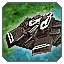

О патче
Всё меняется!
Всем Привет! Это наш ГАФ баланс. Все внесенные изменения могут быть изменены повторно.
Дисклеймер: Внесенные здесь изменения могут быть нарушены или иметь непредвиденные побочные эффекты. Если вы с чем-то столкнетесь, пожалуйста, сообщите об этом в отдел баланса на
сайте. Игровые баги репортить сюда
(канал на сервере GAF Discord).
Все изменения, которые в настоящее время внесены в GAF, позволяют нам оценить новый баланс в реальных играх.
Баланс-команда: SupremeKiska и Isakentyi
Баланс патч 1.0
На нашем сервере, играя в баланс от ФАФ, мы все чаще замечаем, что игровой процесс склоняется к “потным” ладдерным играм с унылым геймплеем...
Ленд
 Аврора
Аврора
Многострадальный юнит. Медленный, неповоротливый...
Стрелец
Чертополох
Я-истл
 Вагнер
Вагнер был ни рыбой, ни мясом. Теперь он рыба...
 Скатис
Скатис
Скатис. Мы экспериментировали с ним раньше...
Аир
Мерси
Мы вместе с вами поиграли в новых Мерсей...
-
Здоровье юнита
- Здоровье:
90 15
- Максимальное здоровье:
90 15
-
Урон
- Урон за тик:
50 800
- Количество тиков:
10 3
- Радиус Урона:
7.5 3.5
Корсар
Итак, Корсары. Много лет назад этот юнит был грозой...
-
Урон
- Урон:
150 200
- Количество Ракет:
8 6
Урон в сумме тот же, но ракеты бьют больнее
-
Точность
- Случайность стрельбы
0.8 0.4
- Допустимая неточность
6 4
- Радиус Урона:
2 3
 ОСА
ОСА
Фишка кибран — это стелс. Фишка ОФЗ — джемминг...
-
Помехи
- Количество ложных целей:
0 4
- Употребление энергии:
0 30
Добавлена кнопка для активации
выключен по умолчанию, как у Т3 Бобра или Кибранского АСФ.